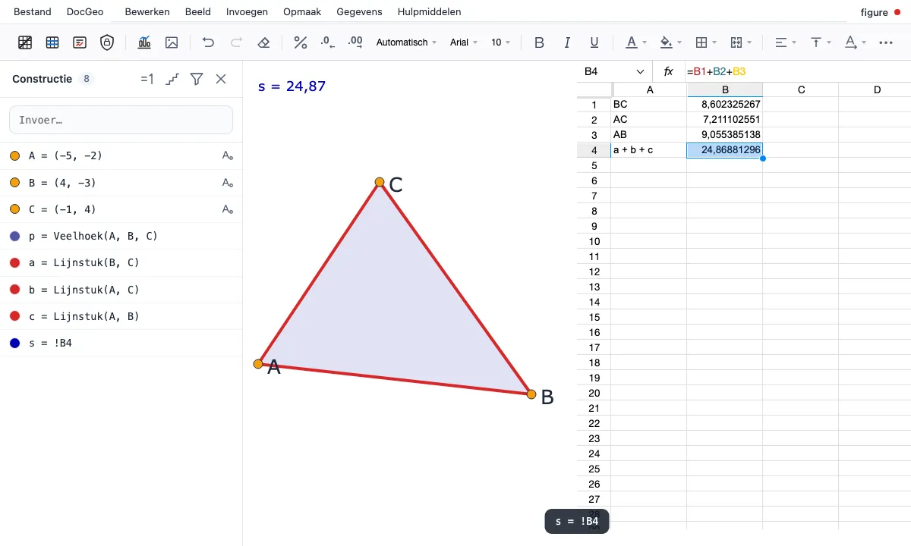

Het rekenblad
Een tabblad van DocGeo kan een blad van DocCells bevatten, het rekenblad van DocTools: naast de figuur, of alleen in een eigen tabblad. De figuur en de cellen lezen elkaar, live.

In het voorbeeld hierboven:
-
de cellen B1 tot B3 lezen de lengtes van de zijden a, b en c
van de driehoek:
=GEO("a")…; - B4 telt ze op:
=B1+B2+B3; -
de figuur leest die som terug met de regel
s = !B4.
Als men A, B of C versleept, volgen de cellen en
s tijdens de beweging.
Een rekenblad toevoegen
| Actie | Hoe |
|---|---|
| Naast de figuur | Bestand › Weergave › Nieuwe rekenbladweergave: een kolom meer, rechts, met een leeg blad; de kolommen krijgen dezelfde breedte (meerdere weergaven) |
| In een eigen tabblad | Bestand › Nieuw rekenbladtabblad: een tabblad „Rekenblad1”, „Rekenblad2”…, dat alleen een blad bevat (werkmappen) |
| Grootte wijzigen, verplaatsen | de scheiding tussen de kolommen slepen; Bestand › Weergave › Weergave naar links verplaatsen of naar rechts, als de rekenbladweergave actief is |
| Verwijderen | Bestand › Weergave › Rekenbladweergave verwijderen: de weergave en haar cellen verdwijnen, de figuur neemt de ruimte weer in. Een rekenbladtabblad verwijdert men zoals elk tabblad. |
- Een tabblad heeft hoogstens één rekenbladweergave: Nieuwe rekenbladweergave is grijs als het er al een heeft.
- Een rekenbladweergave toont één blad, zonder bladtabs. Om met meerdere bladen te werken, maakt men meerdere rekenbladtabbladen, die elkaar lezen (zie verder).
- Een rekenbladweergave toevoegen of verwijderen kan ongedaan worden gemaakt, zoals de andere acties op weergaven.
De menu’s en knoppen van het rekenblad
Een klik of een toetsaanslag in de cellen maakt de rekenbladweergave actief. De balken van DocGeo maken dan plaats voor die van het rekenblad, op dezelfde hoogte: eronder verschuift niets.
- De menubalk houdt Bestand, gevolgd door het menu DocGeo en daarna de menu’s van het rekenblad.
- De knoppenbalk van het rekenblad (getalnotatie, lettertype, vet, kleuren, randen, uitlijning…) vervangt de actiebalk van DocGeo.
- Het menu DocGeo biedt wat nuttig blijft: Constructiegeschiedenis, Gereedschapspalet, Eigenschappen en de Gebruikershandleiding.
- Men keert terug naar de balken van DocGeo met een klik in de figuur of in het paneel „Constructie”, door er een regel in te typen, of door van tabblad te wisselen. In een rekenbladtabblad blijven de balken van het rekenblad.
- Een dialoogvenster van het rekenblad (voorwaardelijke opmaak, getalnotatie…) bedekt het hele venster van DocGeo met een sluier tot het wordt gesloten.
Het paneel „Constructie” blijft beschikbaar in een rekenbladtabblad (DocGeo › Constructiegeschiedenis): een object dat men er typt, wordt berekend zonder getekend te worden, en de cellen van dat tabblad kunnen het lezen.
Als DocGeo in een andere pagina is ingesloten, zoals DocTools, heeft het geen menubalk: het rekenblad houdt zijn balken bovenaan zijn kolom.
De figuur leest de cellen
Een formule van de figuur duidt een cel van de rekenbladweergave
van het tabblad aan met een uitroepteken gevolgd door het adres
van de cel: !B3.
| Schrijfwijze | Waarde |
|---|---|
!B3 |
cel B3 |
!B2:B21 |
een bereik van één rij of één kolom: een lijst van waarden |
!A1:C3 |
een rechthoek: een lijst van rijen, elk een lijst |
Rekenblad1!B3 |
cel B3 van een rekenbladtabblad |
'Figuur 1'!!B3 |
cel B3 van de rekenbladweergave van een ander tabblad |
A = (!B1, !B2)
r = !B3
L = !A1:A10-
Het adres bestaat uit hoofdletters en dan cijfers
(
B3,AA12), zonder$, direct na het uitroepteken. De negatie van een object met de naam A1 schrijf je!(A1). -
Een getal, een tekst, een boolean of een lijst wordt gelezen
zoals hij is; een datum wordt als getal gelezen. Een cel
bevat een lijst, tussen vierkante haken getypt,
[2; 1], of berekend:=[2; 1]*3. Een lege cel of een cel met een fout (#DIV/0!…) geeft een ongedefinieerde waarde: het object dat haar leest, wordt niet getekend. - Zodra een cel verandert, door een invoer of door de berekening van het rekenblad, worden de objecten die haar lezen opnieuw berekend en getekend.
- Een verwijzing is slechts een deel van een formule: ze maakt geen object. Een punt dat uit de cellen gelezen wordt, zoals A hierboven, is berekend: het kan niet met de muis worden versleept. Om het te verplaatsen, wijzigt men de cellen.
De cellen van een ander tabblad
De naam van het tabblad komt eerst, tussen apostrofs als hij een
spatie of een teken bevat, zoals bij
een ander tabblad lezen: Rekenblad1!B3. Heeft dat tabblad ook een figuur, dan
verdubbelt men het uitroepteken, 'Figuur 1'!!B3,
want 'Figuur 1'!B3 duidt het object B3 van zijn
figuur aan. De cellen worden gelezen zoals ze berekend waren
toen men dat tabblad verliet.
De cellen lezen de figuur: GEO
In een cel leest de functie GEO de waarde van een
object van de figuur, aangeduid met zijn naam tussen
aanhalingstekens.
=GEO("c")
=GEO("'Figuur 1'!c")
=2*GEO("r")+1- De waarde is die welke een formule van de figuur zou lezen door het object te noemen: lengte van een lijnstuk, waarde van een uitdrukking of schuifregelaar, tekst, toestand van een selectievakje… Ze volgt de figuur terwijl men die bewerkt.
-
Een punt wordt gelezen als de lijst van zijn coördinaten:
=GEO("A")geeft[1; 2], waarmee je rekent als met een lijst:=GEO("A")*2. -
Een onbekend of ongedefinieerd object, of een object dat
geen getal, tekst, boolean, punt of lijst is, geeft
#N/A. De naam moet in de formule geschreven staan:=GEO(A1)geeft#VALUE!. -
GEO("'Figuur 1'!c")leest het object c van een ander tabblad: zo leest een rekenbladtabblad een figuur. -
GEOheeft in alle talen dezelfde naam. De functie bestaat alleen in DocGeo: in DocCells alleen geeft ze#N/A.
Kringverwijzing
Een object dat door GEO gelezen wordt, kan niet
afhangen van een cel die van dat object afhangt. Als
A1 =GEO("m")+1 bevat, wordt het
herdefiniëren van m met de regel
m = !A1 geweigerd: „Kringverwijzing:
!A1”.
Evenzo wordt een celformule die een kring met de figuur zou sluiten met deze melding ongedaan gemaakt, en krijgen de cellen hun vorige inhoud terug. In een bestand dat toch een kring bevat, is de lezing die hem sluit ongedefinieerd.
Ongedaan maken en opslaan
- De cellen hebben hun eigen ongedaan maken: Ctrl Z in de cellen, of de menu’s van het rekenblad. De knoppen van DocGeo maken een invoer in het rekenblad niet ongedaan.
-
De cellen, hun formules en hun opmaak worden met de figuur
opgeslagen, in hetzelfde
.dgo-bestand. Ctrl S in de cellen, of Bestand › Opslaan, slaat alles op.
Voor leerlingen
De speler van DocGeo toont, zoals een figuur ingesloten in een webpagina, het blad zonder menu’s of knoppen, met zijn formulebalk.
- De leerling kan in de cellen typen, zoals in een invoerveld: de figuur volgt.
- De knop om opnieuw in te stellen geeft de cellen terug zoals ze opgeslagen waren.
- Deze invoer hoort niet bij het antwoord van de leerling dat een insluitende pagina bewaart: alleen de objecten van de figuur.
Het rekenblad is een aparte toepassing, die alleen geladen wordt
als het getoonde tabblad er een heeft. Op een site met een eigen
kopie van DocGeo moet de map doccells naast de map
van DocGeo gepubliceerd zijn; anders toont de rekenbladweergave
„⚠ DocCells”, en de rest van de figuur werkt.